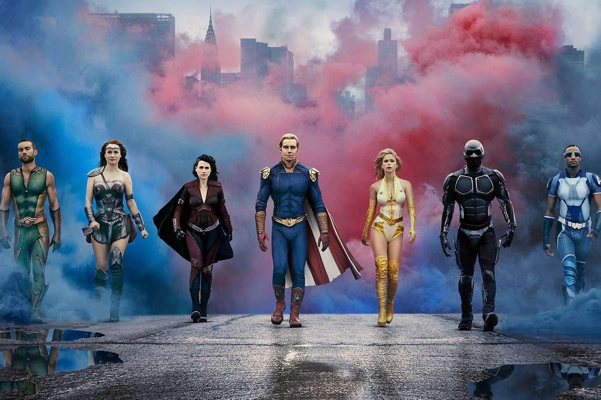
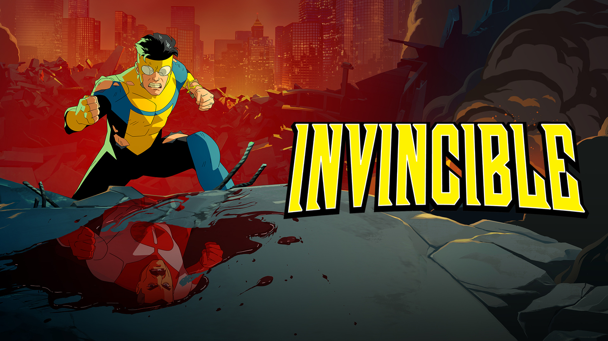
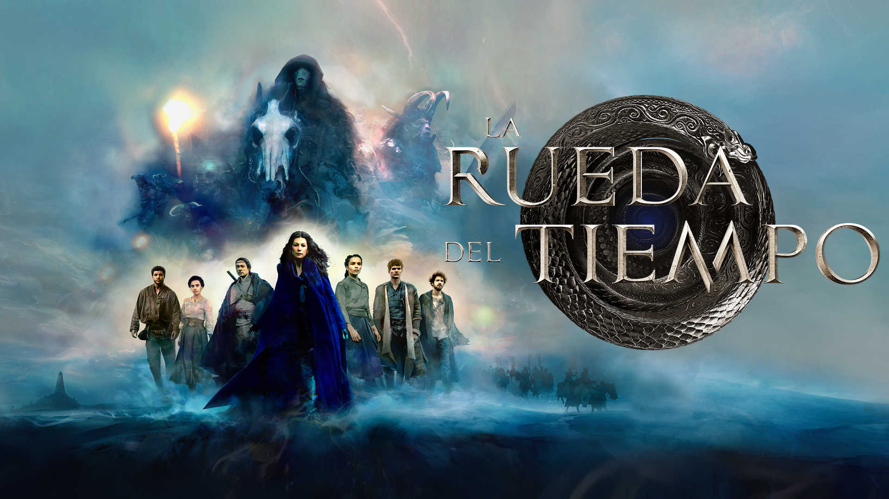
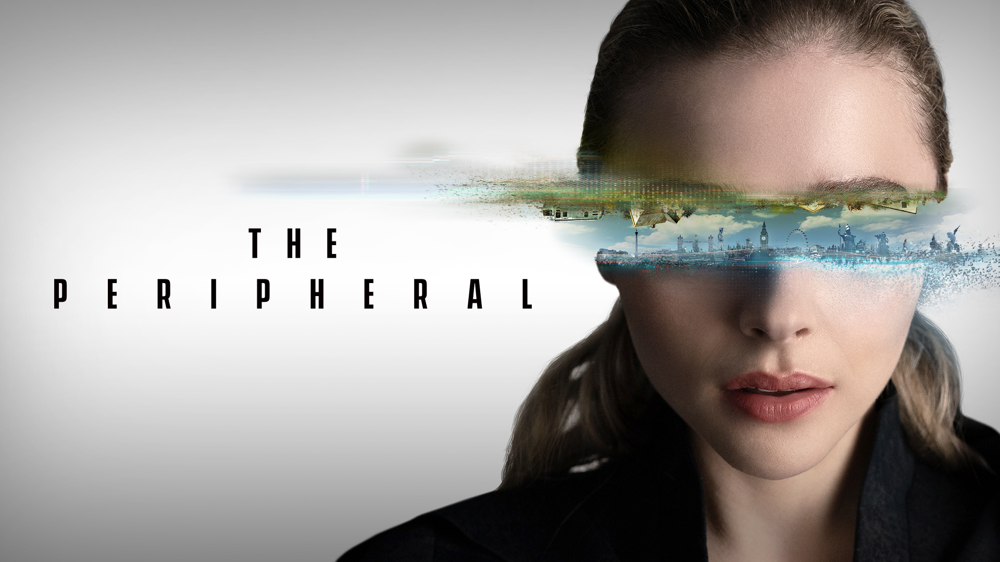
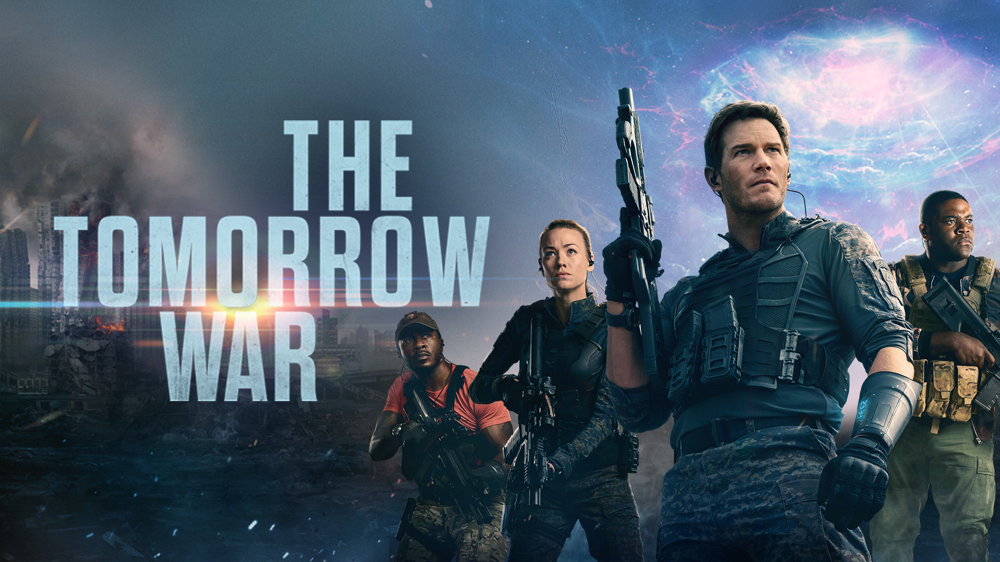
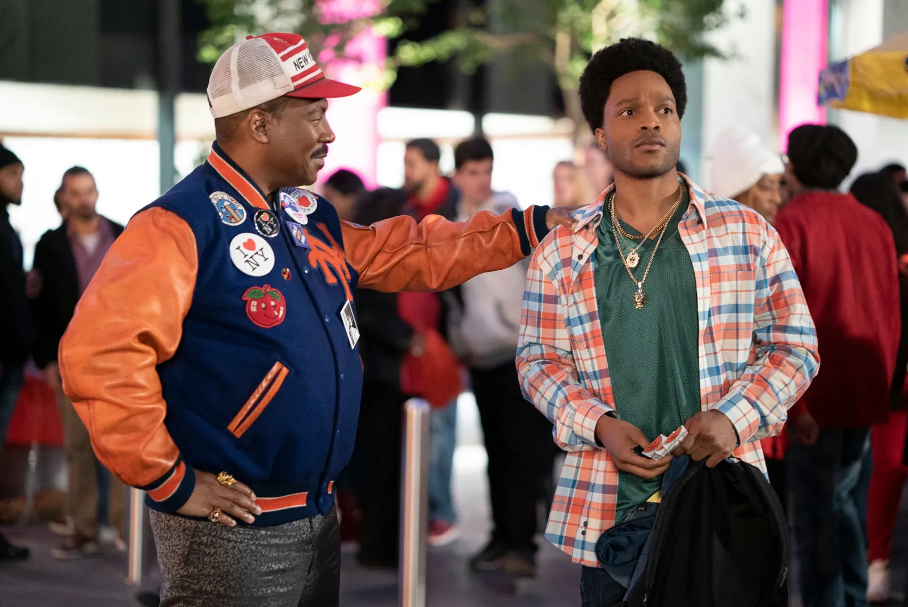
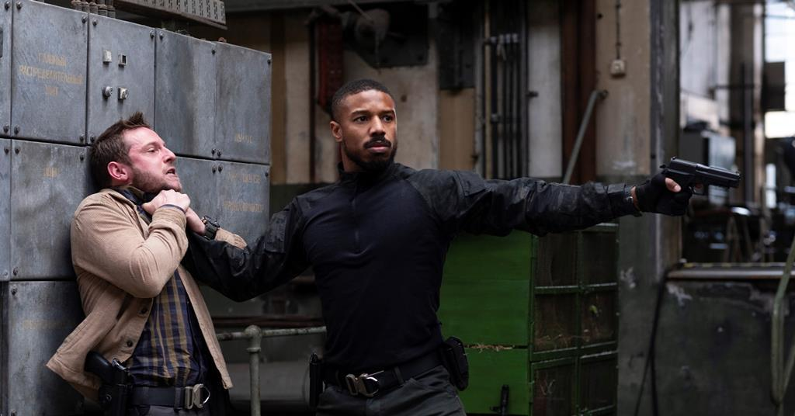

Series

❖ The Boys
Ácida, brutal y refrescante visión de los superhéroes.
★★★★★★★★★☆ (9/10)

❖ Reacher
Sólido thriller de acción basado en los libros de Lee Child.
★★★★★★★★☆☆ (8/10)

❖ Invincible
Animación madura que redefine el género de superhéroes.
★★★★★★★★☆☆ (8/10)

❖ La Rueda del Tiempo
Fantasía épica con altibajos pero mucho potencial.
★★★★★★☆☆☆☆ (6/10)

❖ The Peripheral
Sci-fi intrigante y visualmente impactante aunque algo lenta.
★★★★★★★☆☆☆ (7/10)
Películas

❖ Sound of Metal
Poderoso retrato de la pérdida y la aceptación.
★★★★★★★★★☆ (9/10)

❖ La Guerra del Mañana
Acción frenética y efectos impresionantes, aunque poco original.
★★★★★★★☆☆☆ (7/10)
❖ Borat 2
Sátira política audaz y provocadora, no para todos los gustos.
★★★★★★★☆☆☆ (7/10)

❖ Un Príncipe en Nueva York 2
Nostalgia divertida pero sin la chispa del original.
★★★★★★☆☆☆☆ (6/10)

❖ Without Remorse
Thriller militar genérico pese al sólido trabajo de Michael B. Jordan.
★★★★★★☆☆☆☆ (6/10)